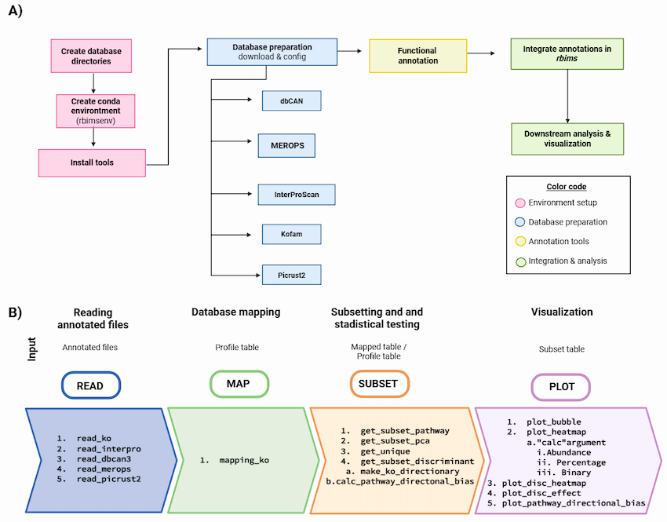

Análisis global: del MAG individual al catálogo del pozol
Hasta aquí, cada equipo trabajó una muestra: ensambló, hizo binning, refinó y anotó los MAGs de su tiempo de fermentación. En esta última parte damos el paso que convierte esos esfuerzos individuales en una sola historia: juntamos los MAGs de todos los tiempos (0, 9, 24 y 48 h) en un catálogo común y lo exploramos como comunidad.
- La desreplicación por fin desreplica de verdad. Cuando corrimos dRep por muestra, casi no había nada que quitar. Pero entre muestras sí: es muy probable que el mismo organismo se haya recuperado en varios tiempos, y dRep se queda con el mejor representante de cada uno para darnos un catálogo no redundante del pozol.
- La anotación funcional se vuelve comparativa. Un mapa de rutas de un solo MAG es una columna; el de todo el catálogo es una figura que responde ¿quién hace qué en la fermentación?.
La desreplicación global y las anotaciones de todas las muestras ya están pre-computadas (correrlas requiere los MAGs de todos los equipos y toma tiempo). En esta sesión nos concentramos en: construir una tabla de metadatos y explorar el catálogo con RbiMs. En tu directorio ya tienes:
- Los
.txtde KofamScan de todos los MAGs del catálogo. - La tabla de GTDB-Tk (taxonomía) y el
quality_reportde CheckM2 (calidad) de todo el catálogo.
01. El catálogo de MAGs del pozol
mkdir -p results/18.drep_global/binsfor s in 0h 09h 24h 48h; do
for f in results/12.drep/$s/dereplicated_genomes/*.fasta; do
base=$(basename "$f")
case "$base" in
${s}_*) new="$base" ;;
*) new="${s}_${base}" ;;
esac
cp "$f" "results/18.drep_global/bins/$new"
done
donecheckm2 predict --threads 16 -x fasta --input results/18.drep_global/bins/ --output-directory results/18.drep_global/checkm2/cq="results/18.drep_global/checkm2/quality_report.tsv"
echo "genome,completeness,contamination" > results/18.drep_global/genomeInfo.csv
tail -n +2 $cq | awk -F'\t' '{print $1".fasta,"$2","$3}' \
>> results/18.drep_global/genomeInfo.csvdRep dereplicate results/18.drep_global \
-p 16 -comp 50 -con 10 \
--genomeInfo results/18.drep_global/genomeInfo.csv \
-g results/18.drep_global/bins/*.fastamkdir -p results/19.gtdbtk_global
conda activate gtdbt
nohup gtdbtk classify_wf \
--genome_dir results/18.drep_global/dereplicated_genomes/ \
--out_dir results/19.gtdbtk_global \
--cpus 12 \
-x fasta > outs/19.gtdbtk-global.out &02. Construye la tabla de metadatos
Las anotaciones no significan nada solas: para leerlas necesitamos saber, de cada MAG, de dónde viene, qué es y qué tan bueno es. Esa tabla que une origen + taxonomía + calidad es la metadata, y es la columna vertebral de cualquier figura comparativa. La vas a construir tú, porque saber armarla es una habilidad que usarás en todos tus proyectos.
Crea una tabla que se llame Metadatos.tsv dentro del directorio de resultados de GTDB-tk que incluya el nombre del bin y la clasificación taxonómica.
1) Cambia el encabezado del nombre del bin: user_genome por Bin_name
2) Elimina classification y asegurate de que los niveles taxonómicos estén separados por tabulador. A cada columna de los niveles taxonómicos agregale su encabezado correspondiente: Domain, Phylum, Class, Order, Family, Genus, Species
echo -e Bin_name”\t”Domain”\t”Phylum”\t”Class”\t”Order”\t”Family”\t”Genus”\t”Species > Metadatos.tsv
cut -f1,2 gtdbtk.bac120.summary.tsv | grep -v “classification” | sed ‘s/;/\t/g’ >> Metadatos.tsv
03. RbiMs: explora el metabolismo del catálogo
Ahora que ya tenemos los bins refinados, queremos saber qué capacidades metabólicas poseen. Para ello es necesario predecir sus genes y asignarles función.
RbiMs es un paquete de R muy útil para obtener la anotación de cada KEGG ID y generar plots de esta información. Puede trabajar con anotaciones de KOFAM, InterProScan, MEROPS, dbCAN.

Estos resultados ya los tienes en el directorio results/20.kofam-global/
Y ahora que ya tenemos los identificadores de KO para cada proteína, vamos a filtrar y graficar el metabolismo de los bins.
Visualizaciones
Vamos al editor de Rstudio para correr RbiMs ✨
#Ubicate en el directorio donde se encuentran los txt de kofam
setwd("/home/alumnoX/")
#A continuación, leemos los resultados de KEGG
pozol_table <- read_ko(data_kofam = "12.kofam/48h")
#y los mapeamos con la base de datos de KEGG:
pozol_mapp <- mapping_ko(pozol_table)
#Nos centraremos en las vías metabólicas relacionadas con la biosintesis de aminoacidos y vitaminas:
Overview <- c("Biosynthesis of amino acids", "Vitamin B6 metabolism")
Aminoacids_metabolism_pozol <- pozol_mapp %>%
drop_na(Module_description) %>%
get_subset_pathway(Pathway_description, Overview)
#Visualizamos los datos con un gráfico de burbujas:
plot_bubble(tibble_ko = Aminoacids_metabolism_pozol,
x_axis = Bin_name,
y_axis = Pathway_description,
analysis = "KEGG",
calc = "Percentage",
range_size = c(1, 10),
y_labs = FALSE,
x_labs = FALSE)
#Añadiremos metadatos, como la taxonomía:
Metadatos <- read_delim("results/10.gtdbtk/Metadatos.txt", delim = "\t")
#Y generaremos un gráfico de burbujas con metadatos:
plot_bubble(tibble_ko = Aminoacids_metabolism_pozol,
x_axis = Bin_name,
y_axis = Pathway_description,
analysis = "KEGG",
data_experiment = Metadatos,
calc = "Percentage",
color_character = Family,
range_size = c(1, 10),
y_labs = FALSE,
x_labs = FALSE)
# Exploración de una Vía Específica
# podemos explorar una sola vía, como el “Secretion system,” y crear un mapa de calor para visualizar los genes relacionados con esta vía:
Secretion_system_pozol <- pozol_mapp %>%
drop_na(Cycle) %>%
get_subset_pathway(Cycle, "Secretion system")
#Y, finalmente, generamos un mapa de calor:
plot_heatmap(tibble_ko = Secretion_system_pozol,
y_axis = Genes,
analysis = "KEGG",
calc = "Binary")
#También podemos agregar metadatos para obtener una visión más completa:
plot_heatmap(tibble_ko = Secretion_system_pozol,
y_axis = Genes,
data_experiment = Metadatos,
order_x = Family,
analysis = "KEGG",
calc = "Binary")
plot_heatmap(tibble_ko = Secretion_system_pozol,
y_axis = Genes,
data_experiment = Metadatos,
order_y = Pathway_cycle,
order_x = Family,
analysis = "KEGG",
calc = "Binary")
# Explorar
colnames(pozol_mapp)
pozol_mapp %>%
select(Cycle, Pathway_cycle, Pathway_description) %>%
distinct()
Ya tienes el objeto completo (funciones + metadatos). Prueba distintas vistas:
- Agrupa los MAGs por taxonomía: ¿los organismos emparentados comparten repertorio metabólico?
- Enfócate en una ruta o categoría de interés (por ejemplo, fermentación, metabolismo de carbohidratos, biosíntesis de aminoácidos o vitaminas).
04. Lectura biológica: ¿quién hace qué en el pozol?
Conecta las funciones con la biología del pozol: qué grupos dominan (p. ej. bacterias lácticas), qué rutas de fermentación aparecen, biosíntesis de aminoácidos y vitaminas que enriquecen el sustrato de maíz, CAZymes que degradan el almidón. Deja que los MAGs cuenten la historia de la fermentación.
Coloreamos los MAGs por la muestra de la que los recuperamos, pero eso no nos dice en qué tiempos cada organismo realmente está presente ni en qué abundancia. Para responder eso, mapearíamos las lecturas de cada muestra contra el catálogo completo —por ejemplo con CoverM— y obtendríamos la abundancia de cada MAG en cada tiempo de fermentación. Esa es la extensión natural de este análisis, y con ella podrías seguir la sucesión de la comunidad a lo largo del pozol.
- ¿Cuántos MAGs quedaron en el catálogo tras la desreplicación global, y a qué grupos taxonómicos pertenecen?
- ¿Qué funciones metabólicas parecen compartidas por casi todos, y cuáles son exclusivas de unos pocos?
- Si tuvieras que elegir un MAG para estudiar a fondo el rol de un organismo en la fermentación del pozol, ¿cuál elegirías y por qué (taxonomía, calidad, repertorio funcional)?